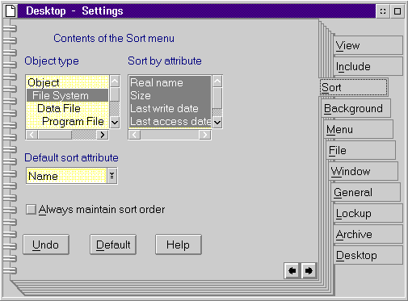

You specify objects to sort on by selecting the Sort tab of the Settings notebook. The following figure shows the Sort dialog:
There are four elements to consider for sorting objects:
Element
To select the previous sort criteria, press the Undo push button. To select the default sort criteria, press the Default push button.
Two object Details fields introduced by WPObject are sortable criteria: Name and Type. WPFileSystem introduces eight other sortable criteria. The following table shows the name of each detail as shown on the object's context menu:
┌───────────────────────┬───────────────────┐│Object Details Field │Attribute │ ├───────────────────────┼───────────────────┤ │Name │Name │ ├───────────────────────┼───────────────────┤ │Type │Type │ ├───────────────────────┼───────────────────┤ │Real name │Real name │ ├───────────────────────┼───────────────────┤ │Size of the file │Size │ ├───────────────────────┼───────────────────┤ │Last modification date │Last write date │ ├───────────────────────┼───────────────────┤ │Last modification time │Last write time │ ├───────────────────────┼───────────────────┤ │Last access date │Last access date │ ├───────────────────────┼───────────────────┤ │Last access time │Last access time │ ├───────────────────────┼───────────────────┤ │Date of creation │Creation date │ ├───────────────────────┼───────────────────┤ │Time of creation │Creation time │ └───────────────────────┴───────────────────┘
WPObject and WPFileSystem are the only system classes that contribute Details fields to the Sort dialog of the Settings notebook. User-defined class may introduce their own Details fields as sort criteria.
The sort class for a particular container determines what class' sort Details fields will appear as active sort criteria on the container's Sort dialog of the Settings page. The default sort class for all containers is WPFileSystem. This sort class can be manually changed via the container's Settings page, and it can also be programmatically changed by using wpSetFldrSortClass.
The wpSetFldrSortClass and wpQueryFldrSortClass methods are needed to set both the Always maintain sort order checkbox on a container's Sort dialog, as well as the chosen sort field.
Note: The sort methods are explained in Folder Related Methods.